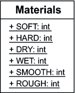

5.4 Konstanten und Aufzählungen
In Programmen gibt es Variablen, die sich ändern (wie zum Beispiel ein Schleifenzähler), aber auch andere, die sich beim Ablauf eines Programms nicht ändern. Dazu gehören etwa die Startzeit der Tagesschau oder die Ausmaße einer DIN-A4-Seite[133](Ein DIN-A4-Blatt ist 29,7 cm hoch und 21,0 cm breit.). Die Werte sollten nicht wiederholt im Quellcode stehen, sondern über ihre Namen angesprochen werden. Dazu werden Variablen deklariert, denen genau der konstante Wert zugewiesen wird; die Konstanten heißen dann symbolische Konstanten.
In Java gibt es zur Deklaration von Konstanten zwei Möglichkeiten:
- Öffentliche statische finale Variablen nehmen konstante Werte auf.
- Aufzählungen über ein enum (die intern aber auch nur öffentliche finale statische Werte sind).
5.4.1 Konstanten über öffentliche statische finale Variablen
Statische Variablen werden auch verwendet, um symbolische Konstanten zu deklarieren. Damit die Variablen unveränderlich bleiben, gesellt sich der Modifizierer final hinzu. Dem Compiler wird auf diese Weise mitgeteilt, dass dieser Variable nur einmal ein Wert zugewiesen werden darf. Für Variablen bedeutet dies: Es sind Konstanten; jeder spätere Schreibzugriff wäre ein Fehler.
Konstante Werte haben wir schon bei GameUtils eingesetzt:
Listing 5.24: GameUtils, Ausschnitt
public class GameUtils
{
public static final int MAX_ID_LEN = 20 /* chars */;
...
}
Da im Quellcode das Vorkommen von Zahlen wie der 20 undurchsichtig wäre, sind symbolische Namen zwingend. Stehen dennoch Zahlen ohne offensichtliche Bedeutung im Quellcode, so werden sie magische Zahlen (engl. magic numbers) genannt. Es gilt, diese Werte in Konstanten zu fassen und sinnvoll zu benennen.
| Tipp |
|
Es ist eine gute Idee, die Namen von Konstanten durchgehend großzuschreiben, um ihre Bedeutung hervorzuheben. |
Der Zugriff auf die Variablen sieht genauso aus wie ein Zugriff auf andere statische Variablen.
| Beispiel |
|
Greife auf Konstanten zurück: System.out.println( Math.PI ); |
5.4.2 Typ(un)sichere Aufzählungen *
Konstanten sind eine wertvolle Möglichkeit, den Quellcode aussagekräftiger zu machen. Das gilt auch für Aufzählungen, also diverse Konstanten, die für unterschiedliche Ausprägungen stehen. Eine Klasse Materials soll zum Beispiel Konstanten für die Beschaffenheit eines Materials deklarieren:
Listing 5.25: Materials.java
public class Materials
{
public static final int SOFT = 0;
public static final int HARD = 1;
public static final int DRY = 2;
public static final int WET = 3;
public static final int SMOOTH = 4;
public static final int ROUGH = SMOOTH + 1;
}
Für ihre Belegungen ist es günstig, die Konstanten relativ zum Vorgänger zu wählen, um das Einfügen in der Mitte zu vereinfachen. Das sehen wir bei der letzten Variablen, ROUGH.
Abbildung 5.13: Die Klasse Materials mit Konstanten
Einfache Konstantentypen – wie bei uns int – bringen jedoch den Nachteil mit sich, dass die Konstanten nicht unbedingt von jedem angewendet werden müssen und ein Programmierer die Zahlen oder Zeichenketten eventuell direkt einsetzt. Dieses Problem ergibt sich zum Beispiel dann, wenn ein Font-Objekt für die grafische Oberfläche angelegt werden soll, aber unser Gedächtnis versagt, in welcher Reihenfolge die Parameter zu füllen sind. Ein Fallbeispiel:
Font f = new Font( "Dialog", 12, Font.BOLD );
Leider ist dies falsch, denn die Argumente für die Zeichensatzgröße und den Schriftstil sind vertauscht: Es müsste new Font("Dialog", Font.BOLD, 12) heißen. Das Problem ist, dass die Konstanten nur Namen für Werte eines frei zugänglichen Grundtyps (auch hier int) sind und nur die Variablenbelegung, also der Wert, an den Konstruktor übergeben wird. Niemand kann verbieten, dass die Werte direkt eingetragen werden. Das führt dann zu Fehlern wie im oberen Fall. In diesem ist 12 die Ganzzahl für den Schriftstil, obwohl es dafür nur die Werte 0, 1, 2 geben sollte. Mit Zeichenketten als Werten der Konstanten kommen wir der Lösung auch nicht näher.
| Hinweis |
|
Ganzzahlen haben aber durchaus ihren Vorteil, wenn es Mischungen von Aufzählungen gibt, also etwa ein hartes und ein raues Material. Das lässt sich durch Materials.HARD + Materials.ROUGH darstellen – was aber nur dann gut funktioniert, wenn jede Konstante ein Bit im Wort einnimmt, wenn also die Werte der Konstanten 1, 2, 4, 8, 16, ... lauten. |
Eine gute Möglichkeit, von Ganzzahlen wegzukommen, besteht darin, Objekte einer Klasse als Konstanten einzusetzen. Java bietet seit der Version 5 über das neue Schlüsselwort enum ein Sprachkonstrukt für richtige Aufzählungen.
| Geschichte |
|
Sun hat zu Beginn der Entwicklung von Java diverse Schlüsselwörter reserviert, aber enum war nicht seit Beginn dabei. Als dann in Java 5 plötzlich ein neues Schlüsselwort hinzukam, mussten Entwickler viel Quellcode anpassen und Variablennamen ändern, denn für den Variablentyp java.util.Enumeration wurde gern der Variablenname »enum« gewählt. |
5.4.3 Aufzählungen mit enum
Die Schreibweise für Aufzählungen erinnert ein wenig an die Deklaration von Klassen, nur dass das Schlüsselwort enum statt class gebraucht wird. Aufzählungen für Wochentage sind ein gutes Beispiel:
Listing 5.26: com/tutego/weekday/Weekday.java, Weekday
public enum Weekday
{
MONDAY, TUESDAY, WEDNESDAY, THURSDAY, FRIDAY, SATURDAY, SUNDAY
}
Die Konstantennamen werden wie üblich großgeschrieben.
Abbildung 5.14: Eine Aufzählung in UML
Enums nutzen
Um zu verstehen, wie sich Enums nutzen lassen, ist es hilfreich, zu wissen, wie der Compiler sie umsetzt. Intern erstellt der Compiler eine normale Klasse, in unserem Fall Weekday. Alle Aufzählungselemente sind dann statische Variablen (Konstanten) vom Typ des Enums:
public class Weekday
{
public static final Weekday MONDAY;
public static final Weekday TUESDAY;
...
}
Jetzt ist es einfach, diese Werte zu nutzen, da sie wie jede andere statische Variable angesprochen werden:
Weekday day = Weekday.SATURDAY;
Hinter den Aufzählungen stehen Objekte, die sich – wie alle anderen – weiterverarbeiten lassen.
if ( day == Weekday.MONDAY )
System.out.println( "'I hate Mondays' (Garfield)" );
Enum-Vergleiche mit ==
Wie die Umsetzung der Enum-Typen zeigt, wird für jede Konstante ein Objekt konstruiert, und das sind Singletons, also Objekte, die nur einmal erzeugt werden. Eigene neue Enum-Objekte können wir nicht aufbauen, da die Klasse nur einen privaten Konstruktor deklariert. Der Zugriff auf dieses Objekt ist wie ein Zugriff auf eine statische Variable. Der Vergleich zweier Konstanten läuft somit auf den Vergleich von statischen Referenzvariablen hinaus, wofür der Vergleich mit == völlig korrekt ist. Ein equals() ist nicht nötig.
| Beispiel |
|
Eine Methode soll entscheiden, ob ein Tag das Wochenende einläutet: public static boolean isWeekEnd( Weekday day ) |
enum-Konstanten in switch
enum-Konstanten sind in switch-Anweisungen möglich. Das ist möglich, da sie intern über eine Ganzzahl als Identifizierer verfügen, den der Compiler für die Aufzählung einsetzt. Das ist ein ähnliches Konzept, wie es der Compiler ab Java 7 auch bei Strings verfolgt.
Initialisieren wir eine Variable vom Typ Weekday, und nutzen wir eine Fallunterscheidung mit der Aufzählung für einen Test auf das Wochenende:
Listing 5.27: WeekdayDemo.java, Ausschnitt main()
Weekday day = Weekday.MONDAY;
switch ( day )
{
case SATURDAY: // nicht Weekday.SATURDAY!
case SUNDAY: System.out.println( "Wochenende. Party!" );
}
Dass case Weekday.SATURDAY nicht möglich ist, erklärt sich dadurch, dass mit switch (day) schon der Typ Weekday über die Variable day bestimmt ist. Es ist nicht möglich, dass der Typ der switch-Variablen vom Typ der Variablen in case abweicht.
Referenzen auf Enum-Objekte können null sein
Dass die Aufzählungen nur Objekte sind, hat eine wichtige Konsequenz. Blicken wir zunächst auf eine Variablendeklaration vom Typ eines enum, die mit einem Wochentag initialisiert ist:
Weekday day = Weekday.MONDAY;
Die Variable day speichert einen Verweis auf das Weekday.MONDAY-Objekt. Das Unschöne an Referenz-Variablen ist allerdings, dass sie auch mit null belegt werden können, was so gesehen kein Element der Aufzählung ist:
Weekday day = null;
Wenn solch eine null-Referenz in einem switch landet, gibt es eine NullPointerException, da versteckt im switch ein Zugriff auf die im Enum-Objekt gespeicherte Ordinalzahl stattfindet.
Methoden, die Elemente einer Aufzählung, also Objektverweise, entgegennehmen, sollten im Allgemeinen auf null testen und eine Ausnahme auslösen, um diesen fehlerhaften Teil anzuzeigen:
public void setWeekday( Weekday day )
{
if ( day == null )
throw new IllegalArgumentException( "null is not a valid argument!" );
this.day = day;
}
Aufzählungen als inneren Typ deklarieren *
Es gibt »normale« Aufzählungen, die an normale Klassen erinnern, und auch »innere« Aufzählungen, die an innere Klassen erinnern. Mit anderen Worten: Weekday kann auch innerhalb einer anderen Klasse deklariert werden. Ist die innere Aufzählung öffentlich, kann jeder sie nutzen. Sie folgt aber den gleichen Sichtbarkeiten wie Klassen, da Aufzählungen ja nichts anderes als Klassen sind, die der Compiler generiert.
Statische Imports von Aufzählungen *
Die Aufzählung Weekday hatten wir in das Paket com.tutego.weekday gesetzt. Um auf eine Konstante wie MONDAY zugreifen zu können, wollen wir unterschiedliche import-Varianten nutzen.
| Import-Anweisung | Zugriff |
| import com.tutego.weekday.Weekday; | Weekday.MONDAY |
| import com.tutego.weekday.*; | Weekday.MONDAY |
| import static com.tutego.weekday.Weekday.*; | MONDAY |
Nehmen wir im Paket als zweites Beispiel eine innere Aufzählung der Klasse Week hinzu:
Listing 5.28: com/tutego/weekday/Week.java
package com.tutego.weekday;
public class Week
{
public enum Weekday
{
MONDAY, TUESDAY, WEDNESDAY, THURSDAY, FRIDAY, SATURDAY, SUNDAY
}
}
| Import-Anweisung | Zugriff |
| import com.tutego.weekday.Week; | Week.Weekday.MONDAY |
| import com.tutego.weekday.Week.Weekday; | Weekday.MONDAY |
| import static com.tutego.weekday.Week.Weekday.* | MONDAY |
Standard-Methoden der Enums *
Die erzeugten Enum-Objekte bekommen standardmäßig eine Reihe von zusätzlichen Eigenschaften. Wir überschreiben sinnvoll toString(), hashCode() und equals() aus Object und implementieren zusätzlich Serializable und Comparable,[134](Die Ordnung der Konstanten ist die Reihenfolge, in der sie geschrieben sind.) aber nicht Cloneable, da Aufzählungsobjekte nicht geklont werden können. Die Methode toString() liefert den Namen der Konstante, sodass Weekday.SUNDAY.toString().equals("SUNDAY") wahr ist. Zusätzlich erbt jedes Aufzählungsobjekt von der Spezialklasse Enum, die in Abschnitt 8.5, »Die Spezial-Oberklasse Enum«, näher erklärt wird.
Ihr Kommentar
Wie hat Ihnen das <openbook> gefallen? Wir freuen uns immer über Ihre freundlichen und kritischen Rückmeldungen.
 Jetzt bestellen
Jetzt bestellen


{kind=link}
{kind=link}